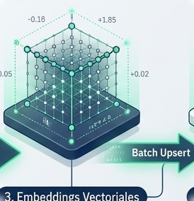
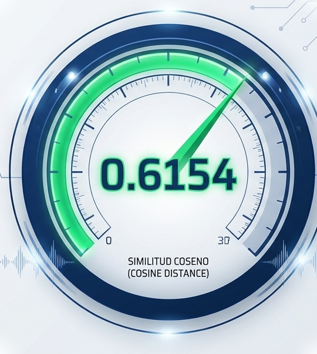
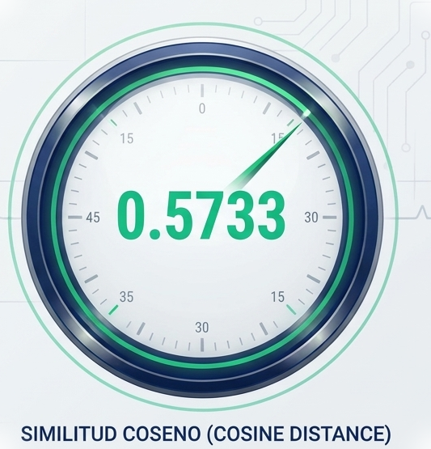
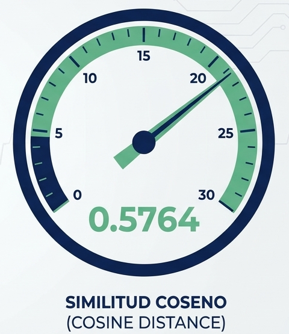
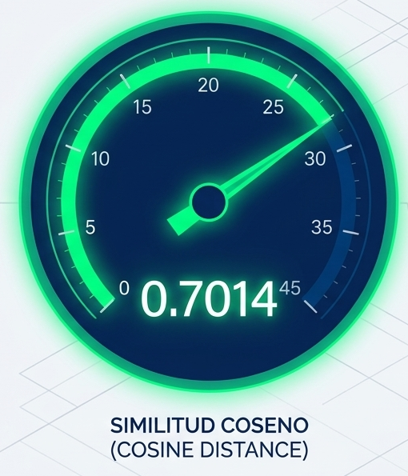
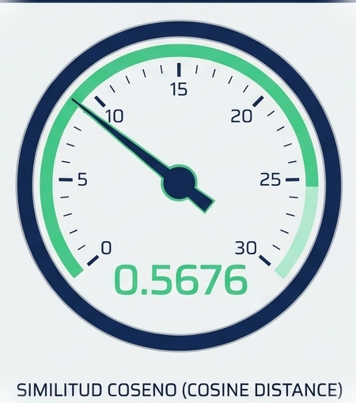

Dataset Base
(UCI Heart Disease)
Formato: Tabular / CSV a viñetas narrativas estructuradas.
Volumen: 303 pacientes, 14 variables (edad, dolor torácico, ECG, colesterol, etc.).
Ingesta de datos clínicos,
vectorización e indexación
semántica
¿Cómo estructurar datos clínicos no estructurados para recuperación semántica precisa, con baja latencia y costo cero?
Diseñar y desplegar un sistema
RAG serverless de alto rendimiento.
Integración de 303 registros clínicos tabulares.
Fusión con 3 guías de práctica clínica cardiológica.
Latencias operativas inferiores a 150 ms.
Costo de infraestructura: $0.00 USD permanente.
(UCI Heart Disease)
Formato: Tabular / CSV a viñetas narrativas estructuradas.
Volumen: 303 pacientes, 14 variables (edad, dolor torácico, ECG, colesterol, etc.).
(MinSalud / OPS / OMS)
Formato: Markdown & PDF (15 chunks).
Contenido: Clasificación semiológica de dolor torácico y factores de riesgo.
(ACC / AHA Guidelines)
Formato: Markdown & PDF (18 chunks).
Contenido: Criterios de ergometría, depresión del segmento ST y perfusión SPECT.
(ESC / OMS Guidelines)
Formato: Markdown & PDF (13 chunks).
Contenido: Metas de c-LDL y doble antiagregación plaquetaria.

Entorno virtual hermético (.venv), instalación en sub-segundos y portabilidad total multiplataforma.
AWS ca-central-1. Free Tier permanente (1GB). Soporte nativo para índices de payload y métrica de Distancia Coseno (HNSW).
384 dimensiones latentes, normalización L2. Cero costo de API y alta densidad semántica.
Tamaño de bloque 512, solapamiento 64 (~12%). Preservación perfecta del contexto clínico en fronteras sin exceder la ventana de tokens.
Para validar el rendimiento clínico de la arquitectura, sometimos el motor a 5 escenarios progresivos de estrés cognitivo (Q1-Q5).
Similitud Coseno (Cosine Distance)
+ Filtros Estrictos de Payload.
El sistema no solo debe encontrar el texto, debe filtrar cruzando normativas y perfiles demográficos.
¿Cuáles son los criterios clínicos para diagnosticar angina típica y cuál es el algoritmo de estratificación de riesgo en dolor torácico?
doc_type: 'clinical_guideline'
Guía de Práctica Clínica: Algoritmo de Decisión Clínica y Priorización 1. Todo paciente con angina típica (Tipo 1) y factores de riesgo...

¿Qué significado clínico tiene una depresión del segmento ST mayor a 2 mm con pendiente plana o descendente durante la prueba de esfuerzo?
Protocolo Clínico de Pruebas de Esfuerzo: 3.1. Depresión del Segmento ST Inducida por Esfuerzo (Oldpeak) - Medición: Descenso del punto J...

¿Cuáles son las metas de c-LDL con estatinas de alta potencia y el esquema de doble antiagregación plaquetaria con aspirina y ticagrelor?
doc_type: ‘pharmacology_protocol’
Protocolo Clínico de Manejo Terapéutico:
2.2. Optimización Lipídica Agresiva
- Meta de Colesterol LDL (c-LDL):
-Reducción >= 50% respecto al valor basal...

Paciente masculino mayor de 60 años con angina típica, hipertensión estadio 2, fluoroscopia con vasos mayores comprometidos y alto riesgo...
Paciente#125: HISTORIA CLÍNICA CARDIOLÓGICA. Datos Demográficos: Paciente de 65 años de edad, sexo Masculino. Angina típica...

Tratamiento de revascularización y pronóstico para defecto de perfusión reversible en gammagrafía SPECT con angina inducida por ejercicio
Sin filtro estricto (Búsqueda sobre todo el corpus)
Protocolo Clínico de Pruebas de Esfuerzo: 5. Centellografía de Perfusión Miocárdica / Gammagrafía (Thal). Estudio con radiotrazadores...

Distribución de Similitud Coseno por Consulta (Top-5)
Similitud Media por Rango de Recuperación
Desempeño y Latencia: El clúster remoto en Qdrant Cloud logró respuestas en tiempo real con una latencia inferior a 150 ms (mediana operativa de 103 ms), incluso al combinar recuperación vectorial con filtros booleanos complejos.
Costo Cero Real: La arquitectura mantiene una operación 100% permanente sobre capas gratuitas (Qdrant Free Tier de 1GB y modelo de embeddings local).
Integración Multimodal: La transformación de bases de datos estáticas (tabulares) a viñetas narrativas enriquecidas demostró ser un puente altamente efectivo para cruzar historias de pacientes con guías médicas oficiales.
Aplicación desplegada y código fuente abierto.